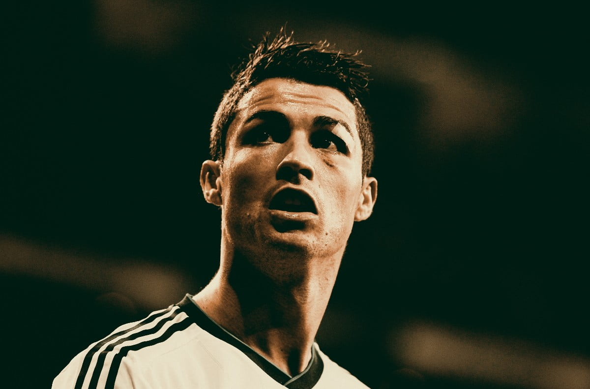
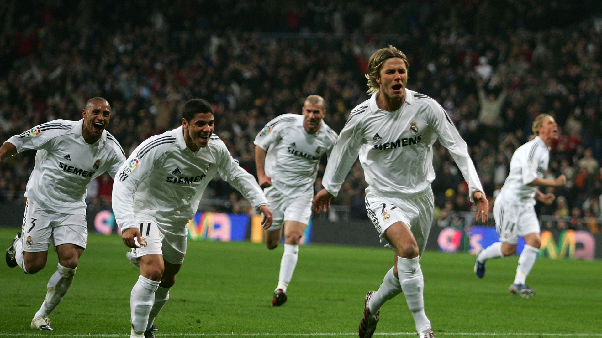
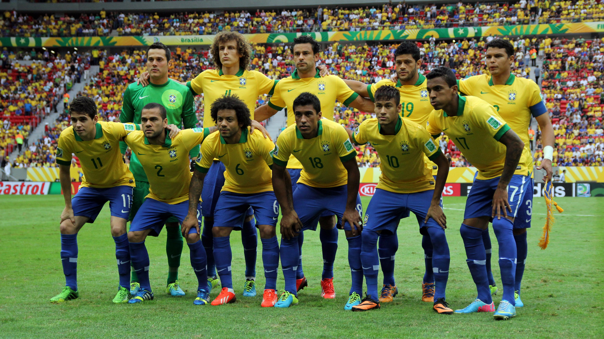
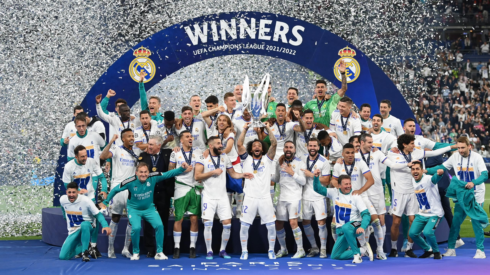

Welcome to Football wolrd
Learn latest news about football.
Latest Sports News
Featured Teams
-

Best Players
-

Best club Teams
-

Best National Teams
Popular Competitions
Popular Teams
FIFA WORLD CUP
The 2022 FIFA World Cup was an international football tournament contested by the men's national teams of FIFA's member associations and 22nd edition of the FIFA World Cup. It took place in Qatar from 20 November to 18 December 2022, making it the first World Cup held in the Arab world. The FIFA World Cup is a professional football tournament held between national football teams, Organised by FIFA.
Argentina were crowned the champions after winning the final against the title holder France 4–2 on penalties following a 3–3 draw after extra time. It was Argentina's third title and their first since 1986, as well being the first nation from outside of Europe to win the tournament since 2002. French player Kylian Mbappé became the first player to score a hat-trick in a World Cup final since Geoff Hurst in the 1966 final and won the Golden Boot as he scored the most goals (eight) during the tournament. Argentine captain Lionel Messi was voted the tournament's best player, winning the Golden Ball. Teammates Emiliano Martínez and Enzo Fernández won the Golden Glove, awarded to the tournament's best goalkeeper, and the Young Player Award, awarded to the tournament's best young player, respectively.

The tournament was contested with eight round-robin groups followed by a knockout round for 16 teams. The defending champions were France, who defeated Croatia 4–2 in the 2018 FIFA World Cup Final. The event was scheduled to take place under a reduced length, from 20 November to 18 December in Qatar
Champions league
The UEFA Champions League is an annual club football competition organised by the Union of European Football Associations (UEFA) and contested by top-division European clubs,deciding the competition winners through a round robin group stage to qualify for a double-legged knockout format, and a single leg final. It is one of the most prestigious football tournaments in the world and the most prestigious club competition in European football, played by the national league champions (and, for some nations, one or more runners-up) of their national associations.
Introduced in 1955 as the Coupe des Clubs Champions Européens (French for European Champion Clubs' Cup), and commonly known as the European Cup, it was initially a straight knockout tournament open only to the champions of Europe's domestic leagues, with its winner reckoned as the European club champion.
In its present format,there are three qualifying rounds and a play-off round, all played over two legs. The six surviving teams enter the group stage, joining 26 teams qualified in advance The 32 teams are drawn into eight groups of four teams and play each other in a double round-robin system. The eight group winners and eight runners-up proceed to the knockout phase that goes with the final match in late May or early June.The winner of the Champions League qualifies for the following year's Champions League, the UEFA Super Cup, and the FIFA Club World Cup.
Spanish clubs have the highest number of victories (19 wins), followed by England (14 wins) and Italy (12 wins). England has the largest number of winning teams, with five clubs having won the title. The competition has been won by 22 clubs, 13 of which have won it more than once, and eight successfully defended their title. Real Madrid is the most successful club in the tournament's history, having won it 14 times, including the first five seasons and also five of the last nine.
current champians : Real madridMost titles : Real madrid(14)
best players(titles):
Premier league
The Premier league is the highest level of the men's English football league system. Contested by 20 clubs, it operates on a system of promotion and relegation with the English Football League (EFL). Seasons typically run from August to May with each team playing 38 matches (playing all other teams both home and away) . Most games are played on Saturday and Sunday afternoons, with occasional weekday evening fixtures.
The competition was founded as the FA Premier League on 20 February 1992 following the decision of clubs in the Football League First Division to break away from the Football League founded in 1888; however, teams may still be relegated into and promoted from the EFL Championship.